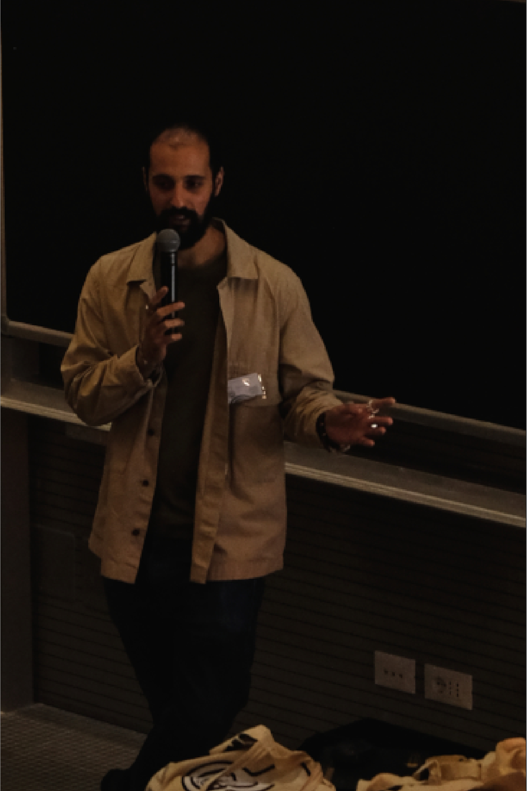

Matteo Giaccari
Bioarchaeologist investigating past human lifeways through stable isotope analysis, archaeological science, and interdisciplinary research. My work bridges bioarchaeology, chemistry, environment, and public engagement.

About
Research focus
My research reconstructs past human lifeways by integrating stable isotope analysis of human and faunal skeletal remains with archaeological context and statistical methods. I investigate diet, mobility, changing social practices, and the interplay between material culture and environmental conditions.
Alongside my archaeometric research, I pursue a line of work on the dialogue between art and science. I am interested in how artistic practice can work alongside scientific knowledge to make it meaningful to publics, institutions and decision-makers. I have contributed to Chem-Art, an artistic movement exploring the relationship between art and chemistry, and to SMArt Communication (Science Meets Art for Communication), an un-disciplinary practice that frames communication as a transformative process rather than information transfer. I proposed the concept of the "meaning gap" to describe the distance between what science has established as reliable and what is collectively recognised as significant enough to inform judgment and action, especially in environmental governance. In this context I am involved in SAGacia (Symposium on Art Looking at Science), a Third Mission initiative combining seminars, an exhibition and a catalogue to raise public awareness of the environmental impact of strategic resource extraction.
Core interests
- Stable isotope bioarchaeology and paleodiet reconstruction
- Human mobility and migration in past societies
- Archaeological science and methodological innovation
- Open science, reproducible research, and data management
- Art-science collaborations and interdisciplinary communication
- Public engagement and science communication
Methods & toolkit
Isotopic systems
- δ13C (carbon)
- δ15N (nitrogen)
- δ34S (sulfur)
- δ18O (oxygen)
- 87Sr/86Sr (strontium)
- δ66Zn (zinc)
Laboratory methods
- Enamel and collagen preparation
- Chromatographic purification
- Thermal Ionization Mass Spectrometry (TIMS)
- Multi-Collector ICP-MS (MC-ICP-MS)
- Trace element analysis
Digital & analytical
- R / RStudio
- FRUITS (dietary mixing model)
- IsoMemo (statistical data analysis)
- QGIS (GIS analysis)
- Statistical modeling & reproducible research
Publications
Reconstructing past lifeways and diets is essential to understanding the emergence of urban societies. However, in what are now arid environments like southern Mesopotamia, poor collagen preservation has long hampered direct isotopic analysis of trophic levels. This limitation has left key gaps in our understanding of subsistence in one of the world’s earliest urban heartlands. Here, we apply zinc isotope analysis to human and faunal dental enamel from the third-millennium BCE site of Abu Tbeirah (Iraq), integrating δ13C, δ18O, and trace element ratios (Ba/Ca and Sr/Ca). This multiproxy approach reveals an omnivorous diet based on C3 cereals, terrestrial animal products (likely including pigs), and limited freshwater resources, with no or little evidence of marine fish consumption, despite the site’s proximity to the ancient shoreline. Dietary patterns do not vary by sex, suggesting broad access to similar food sources within this nonelite population. Moreover, zinc and carbon isotopes proved valuable in identifying animal feeding practices. Our results provide direct dietary evidence from southern Mesopotamia, overcoming long-standing preservation challenges. The results allow us to evaluate specific expectations about diet and animal management in a collagen-poor context, also highlighting early-life feeding behaviors. They demonstrate the power of zinc isotopes to reconstruct trophic level in collagen-poor contexts, opening broad avenues for bioarchaeological research in early complex societies.
This study investigates patterns of mobility and human-animal-environment interactions in the Sumerian city of Abu Tbeirah, located in southern Iraq and dated to the second half of the third millennium BCE. The research represents the first extensive strontium isotope investigation of a population from southern Mesopotamia. It integrates 87Sr/86Sr ratios measured on human and animal dental enamel with δ13C and δ18O data presented in an earlier study. Using published data from part of southwest Asia, we isotopically characterise the regions potentially connected to Sumerian exchange and trade routes. This comparative framework enables the evaluation of Abu Tbeirah in relation to other contemporaneous sites and populations, allowing relative mobility within the Mesopotamian plain to be assessed for a subset of individuals. Moreover, the multi-isotope approach provides insights into the possible effects of climatic variability on local lifeways. Overall, the integration of multi-isotopic data from Abu Tbeirah contributes to refining the Mesopotamian isotopic landscape and offers new perspectives on mobility patterns and environmental adaptations between the third and second millennia BCE.
DATAMESOP is one of the first comprehensive isotopic datasets aimed at supporting bioarchaeological studies in ancient Mesopotamia. The dataset compiles radiogenic strontium and stable carbon, and oxygen isotope measurements from both archaeological (human and animal remains and plant and soil samples) and nonarchaeological sources (surface rocks, soil, dust, water, and rainwater) in South-West Asia. The data have been collected, ensuring the quality and reliability of isotopic measurements and the comparability of the standards, from published studies. This dataset is designed to be user-friendly for archaeologists and isotope specialists, including contextual information that might facilitate data use and interpretation, particularly in regions like Mesopotamia (Iraq, Iran, and Turkey), where isotopic data are scarce and, more generally, challenging to obtain. We believe that this comprehensive dataset will contribute to isotopic investigations in these regions. The dataset is stored in the Pandora platform.
From the 20th century, the division between sciences and art became more pronounced, as brilliantly highlighted by Charles Percy Snow. The two realms – as he called them – drifted apart due to the apparent differences in their languages, creating significant limitations for societal pro-gress. Today, Snow’s concerns remain relevant and are of great interest to both artistic and scientific communities. Moreover, science has become fragmented into various branches. In response to this division, many art movements have attempted to bridge the gap by focusing on specific scientific fields (e.g., physics and biology). However, this has left gaps in exploring the connection between art and other scientific disciplines. Here, we present Chem-Art, a developing artistic movement that uses methods – either heuristic or strictly scientific – to explore the relationship between art and chemistry. Thanks to initiatives such as SAGacia (Smart), which foster dialogue between these two disciplines in mutually meaningful ways, we aim to reduce this division.
In this paper, we aim to reconstruct the dietary habits of supposedly lower rank nobles or middle-class High Middle Ages individuals recovered from the cloister arcade of San Pier Scheraggio within the Uffizi Museum complex in Florence, Italy. Notably, the High Middle Ages was a period of cultural and social changes, which is partly reflected in the dietary habits, as suggested by historical sources. Here we apply stable carbon, nitrogen, and sulphur isotope analysis on humans (n = 34) and animals (n = 13) from San Pier Scheraggio to directly investigate food consumption in this peculiar assemblage. The diet of human individuals was based on terrestrial C3 sources without clear contribution of marine fish (δ13C mean and 1SD: −19.5 ± 0.7 ‰; δ15N mean and 1SD: 9.6 ± 0.4 ‰; δ34S values are mean and 1SD: 7.6 ± 1.2 ‰). The comparison with animal and human samples from other Italian Middle Ages contexts shows that the overall diet of the population buried at San Pier Scheraggio is in line with that of other mediaeval communities in Italy, although with a generally higher contribution of terrestrial animal products. Our data seem to suggest that at the site there was no dietary differentiation concerning age at death or biological sex of the individuals. Some differences, however, can be outlined, for example, in the contribution of C4 crops. In addition to this, we identify two individuals as possible non-locals.
Under review: Giaccari, L.‡, Giaccari, M.‡, Peruzzi, G., Blackburn, C., Mazzei, M., May, A., Dumitriu, A.C., Manfredi, A., Jay, D.G. From Hybrid Arts to SMArt Communication: Rethinking Awareness Through Un-disciplinarity.
Submitted: Giaccari, M.‡, Giaccari, L.‡ The Meaning Gap: Artistic Practice as an Epistemic Partner at the Environmental Science–Policy Interface.
2026: Giaccari, M., Soncin, S., Pellegrini, M., Riga, A., Tafuri, M.A. Analisi isotopica dei resti umani da San Pier Scheraggio. In Archeologia agli Uffizi. Giunti Editore, Firenze.
2025: Romano, L., Festa, G., Andò, R., Caruso, V., Celant, A., De Angelis, A., D’Agostino, F., Denaro, G., Greco, A., Giaccari, M., Manclossi, F., Paoletti, D et al. SLOW SUMER: riusare, riparare e riciclare a Sumer. Egitto e Vicino Oriente antichi. Studi e Ricerche sull’Egitto e il Vicino Oriente in Italia. IV convegno nazionale, Torino, 18-19 giugno 2024.
SAGacia (Symposium on Art Looking at Science) is a continuing education initiative (Third Mission activity aligned with the United Nations’ 2030 Agenda for Sustainable Development) that brings together art and science to raise public awareness of environmental issues. Through seminars, an exhibition, and an accompanying catalogue, the project seeks to foster curiosity, critical thinking, and reflection on everyday habits, employing a communication style that is both accessible and intellectually rigorous. Revived in 2025, SAGacia features a new series of events that integrate artistic and scientific perspectives, engaging a broad audience and promoting a deeper understanding of the environmental impact associated with the extraction of strategic resources. The catalogue serves as a guide, initially exploring the interconnections between science and art before presenting the artworks through both artistic and scientific lenses. It concludes with in-depth essays on strategic materials and extractivism. As such, the catalogue functions as a valuable tool for developing a critical understanding of environmental issues, offering essential resources for interpreting both the symposium and the exhibition.
The goal of the exhibition “Chem-Art. La Chimica e l’Arte si incontrano” is to take the viewer on an artistic-scientific-humanistic journey through the presented works. These works are the result of experiments that involve chemical reactions and innovative artistic processes, falling within the boundaries of what is known as hybrid arts. The purpose of these works is to narrate the union between chemistry and artistic practices, creating interest between these “two worlds.” The exhibition is structured like a constellation of artistic nuclei, fragmented memories, stories, and connections with lived experiences. Sometimes, these connections emerge from travels, excursions, and samplings. It’s a reconstruction of historical dimensions intertwined with the artist’s personal dimension, evoking questions rooted in the past, engaging with contemporary issues, and projecting into the future. The proposed works, illustrated in the following pages, include a selection of six sculptures and two video installations. These pieces were chosen for the exhibition based on their significance in relation to the intersection of art and science
Professional experience
Research Collaborator (voluntary)
Principal investigator of the IsoBreuil project; manuscript preparation and publication; student support and laboratory training in stable isotope techniques.
PhD Researcher
Investigated mobility and dietary habits in southern Mesopotamia using Sr, C, O and Zn isotope approaches. Addressed altered collagen preservation and applied statistical modeling in interdisciplinary archaeological contexts.
Research Collaborator
Compilation and analysis of CSIA-AA datasets; meta-analysis of published isotopic literature.
MSc & BSc Intern
Bone and enamel sample preparation; collagen C, N, S and strontium isotope analysis; support for TIMS-based analytical work.
Teaching & seminars
Invited seminar: "When collagen fails: Zinc isotopes in Bioarchaeology"
Invited seminar: "Application of isotopes to reconstruct dietary habits"
Guest Lecturer (5 lectures)
Data Handling in Isotopic Bioarchaeology • Statistics and Software
Guest Lecturer (6 lectures)
Data Handling in Isotopic Bioarchaeology • Statistics and Software
Conferences & presentations
Organisation and co-organisation
Slow Sumer. Repair, Reuse, Recycling and Mesopotamian Society. Romano L., Festa G., Caruso V., De Angelis A., Denaro G., Ferguson L., Giaccari M., Giampaolo S. et al.
EAA 31st, Session 57: Reconstructing The Past: Bioarchaeological Approaches In The Levant, Mesopotamia, And Iran. Giaccari, M., Göhring, A., Sołtysiak, A. (Co-organiser).
Primo Congresso GIGA (Gruppo Italiano Giovani Antropologi). Amaro A., Bernardini S., Cosenza G., De Luca F., Del Bove A., Farese M., Giaccari M., Martinoia V. et al.
EAA 30th, Session 381: Capacity Building for FAIR Data Sharing and Digital Preservation. Rose T., Richards J., Giaccari M., Niccolucci F., Ercoles I. (Co-organiser).
EAA 28th Session 213: Isoscapes, foodwebs and provenance - Isotope archaeology beyond materials and specialisations. Rose T., Paladugu R., Giaccari M. (Co-organiser).
Poster & oral presentations
Giaccari M. et al. Living on water feeding on land: a Sumerian case study from Southern Iraq. IAPP (Poster).
Giaccari M. et al. Teeth Don't Lie: Diet, Mobility, and Life Histories at Abu Tbeirah through a multi-isotopic approach. AIAr I PhD Day (Oral).
Giaccari M. et al. Breaking Dead: Reusing the Dead in Third-Millennium Mesopotamia. Slow Sumer. Repair, Reuse, Recycling and Mesopotamian Society (Oral Presentation).
Giaccari M. et al. Dietary practices at Abu Tbeirah: exploring Sumerian life through a multi-isotopic approach (δ66Zn, δ18O and δ13C). 31st European Association of Archaeologists (Oral Presentation).
Giaccari M. et al. Life in the cradle of civilization: preliminary results on an isotopic study on mobility in ancient Southern Mesopotamia. Roma chiama Roma congress (Oral Presentation).
Giaccari M. et al. Life in the cradle of Civilization: preliminary results from an isotopic study on human and animal remains to explore mobility at Abu Tbeirah (Iraq). Benelux Association of Stable Isotope Scientists Annual Meeting (Poster).
Giaccari M. et al. Diet and mobility in Medieval Florence: a multi-isotopic approach. CONGRESSO SIMP-SGI-AIV-SOGEI (Poster).
Giaccari M. et al. Shedding light on the Dark Ages: reconstructing dietary habits and mobility phenomena in Medieval Florence using a multi-isotopic approach. 29th European Association of Archaeologists (Oral Presentation).
Giaccari M. The isotopic ratio 87Sr/86Sr as mobility/permanence marker in Velia archaeological site. 28th European Association of Archaeologists (Oral Presentation).
Projects & research initiatives
Funded research projects
- 2026 — Starting Grants for Research, Sapienza University of Rome. Project: Indagine multi-isotopica per la ricostruzione della catena trofica del sito Paleolitico di Grotta Breuil (RM). Role: Principal Investigator
- 2024 — Outreach Starting Grant, Sapienza University of Rome. Project: Sensibilizzazione con SAGacia25: secondo Simposio dell'Arte che Guarda alla Scienza. Role: Manager
Awards
- 2022 — OMF Travel Grant
- 2019 — Sapienza Exam Bonus
Participation in funded research projects
Contact
Academic contact
- Email: matteo.giaccari@uniroma1.it
- Affiliation: Sapienza University of Rome
- Research focus: Bioarchaeology, diet, mobility, isotopes